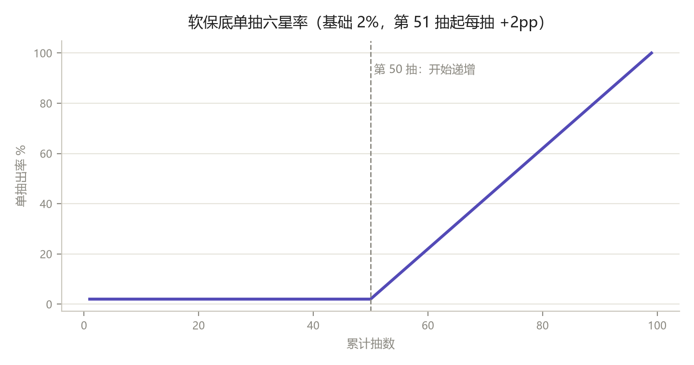
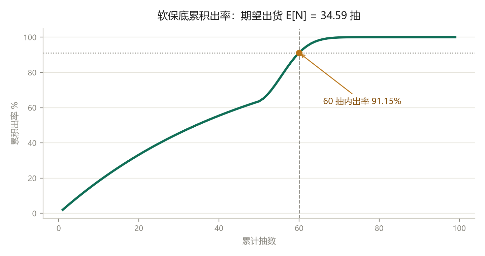
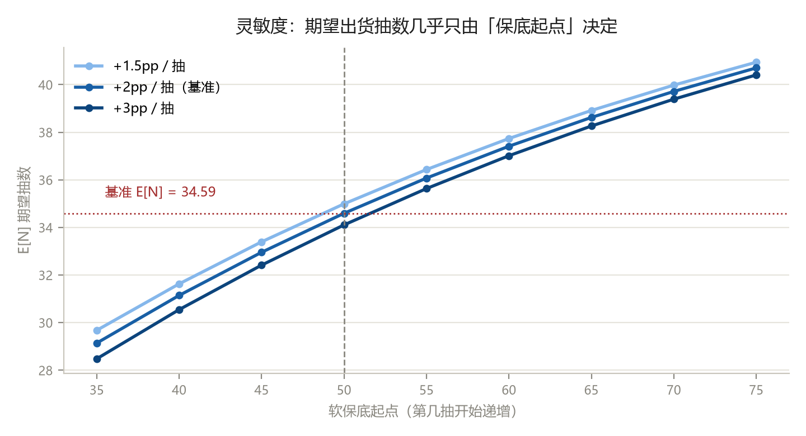
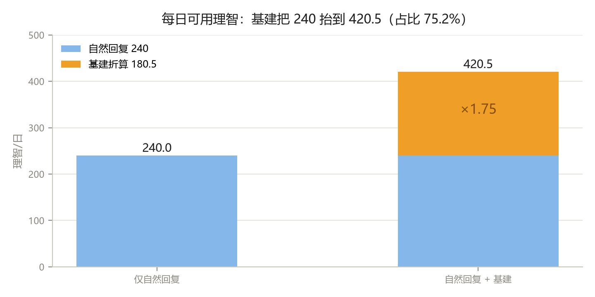
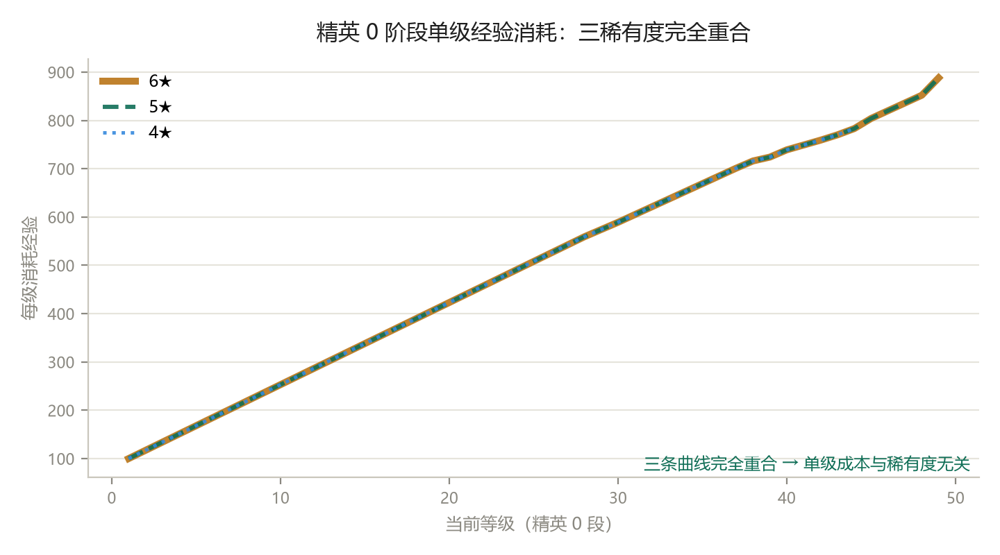
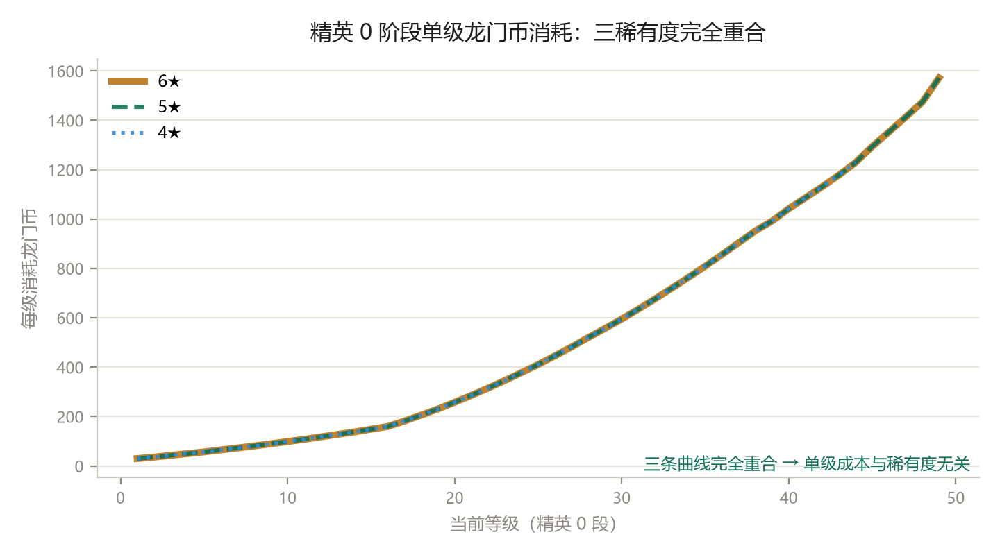
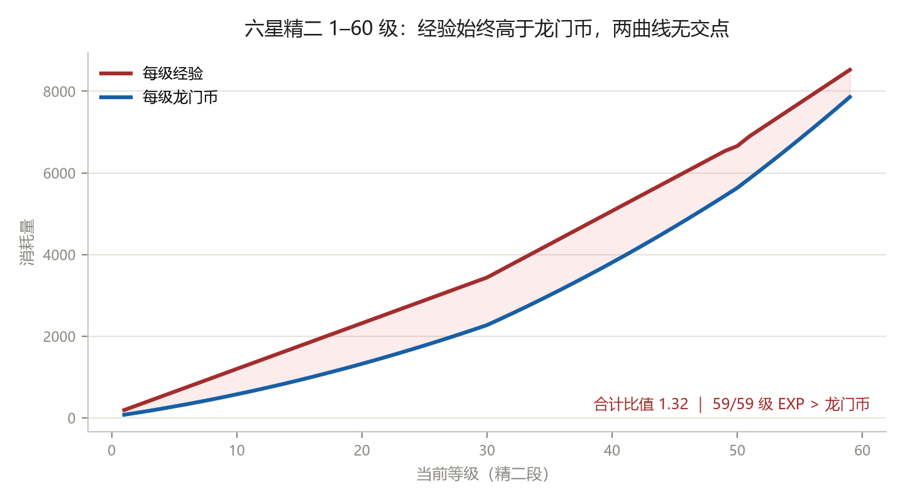
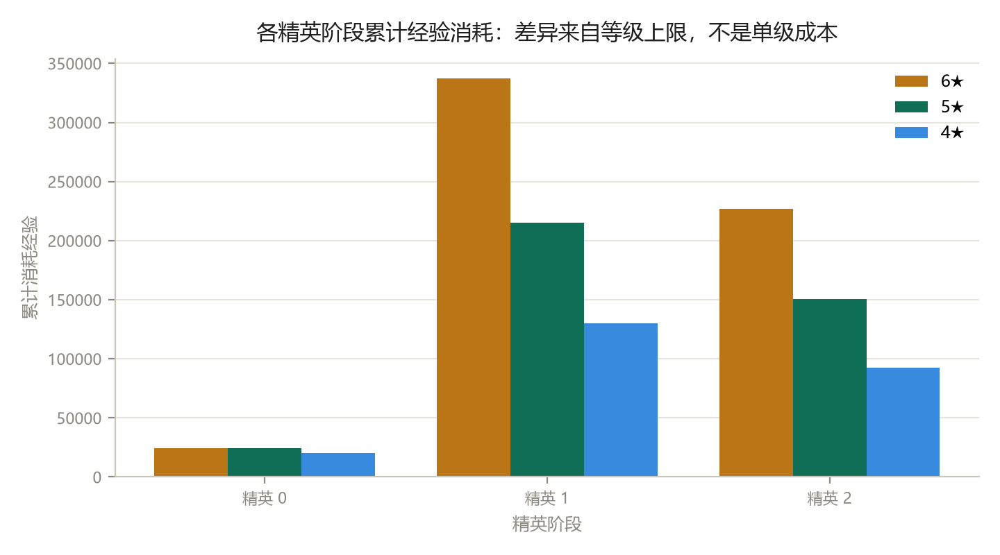
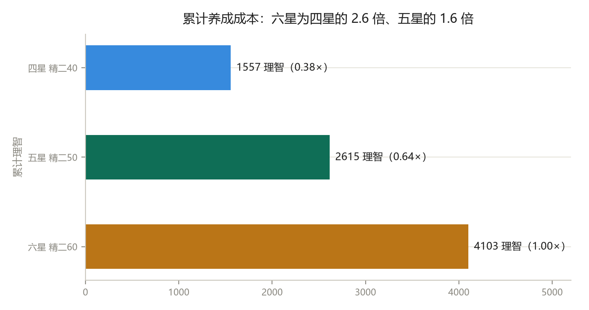
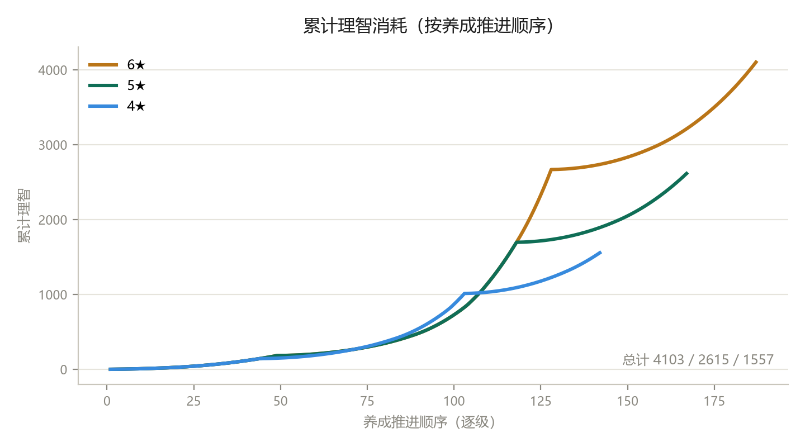

作者：林王儒分析方法：MDA 反向拆解 · 理智锚点 · 同分支对照 · 阈值卡位MDA 重写版
摘要
本文不按「介绍系统」的顺序写。MDA 原本是设计流程——先定机制（Mechanics），机制在运行中长出动态（Dynamics），动态被玩家感知为体验（Aesthetics）。但我们要分析的是已上线产品：机制完全公开，体验可以观测，玩家行为也有大量样本，唯一未知的是「这个数为什么取这个值」。所以本文把链条倒过来用：
体验目标（A）→ 玩家行为（D）→ 参数阈值（M） ｜ 每一层都必须落到可复算的数，否则只是读后感。
七章对应七组推演。文末附五处勘误记录——原稿里那些「看起来对」的结论，正是复算之后才现形的。
- 数值策划的核心产出是「阈值与斜率」，不是公式复杂度。方舟的深度来自少数几个精确卡位——600 防御、60 级、50 抽——而不是乘区堆叠。
- 抽卡的 A 层目标不是「爽」，是「焦虑可控」。达成它只靠两个数：2% 基础率 + 第 51 抽起每抽 +2pp。
- 基建的 A 层目标是「每天只上线一次也不掉队」。180.5 理智/日 = 自然回复 240 的 75.2%，把每日可用理智从 240 抬到 420.5（×1.75）。
- 「高星更难养」不是单级成本更高。同精英阶段下每升 1 级的 EXP 与龙门币与稀有度完全无关，差异全部来自等级上限与精英化材料。
- 软保底的杠杆在「起点」不在「斜率」。起点从 50 挪到 70，E[N] 由 34.59 涨到 39.72（+14.8%）；而每抽增幅从 3pp 降到 1.5pp，只影响 2.6%。
1 方法论与核心循环
1.1 为什么把 MDA 倒过来用
正向 MDA 回答的是「我该怎么做」：设计师先写下规则，规则在玩家手里长出行为，行为最终凝结成体验。它是设计工具，不是分析工具。倒着用回答的是另一个问题：这个数为什么是它。
倒推之所以可行，是因为三个环节都可观测。A 层看社区话语与留存曲线——玩家反复说「歪了」「长草」「这关过不去」，那就是体验的原始数据。D 层看行为痕迹——每天上线几次、理智花在哪类关卡、卡在哪一关。M 层更简单：概率公示、关卡数值、养成表，全部可查。三者都在，缺的只是因果顺序。
倒推的产物是一张「参数—行为—体验」的对应表。有了它，调参才不是拍脑袋：改动某个数之前，先知道它会推动哪一段行为、换来哪一种体验、代价是什么。
1.2 八种美学目标在方舟的权重分配
Hunicke 等人给出的八种美学目标，在方舟身上并非平均分配。权重差异本身就是设计意图的证据——哪一项被喂饱、哪一项被放弃，直接决定了数值往哪倾斜。
表 1 八种美学目标在《明日方舟》的权重与数值落地
| 美学目标 | 方舟权重 | 主要承载系统 | 在数值上的落地方式 |
|---|
| Challenge 挑战 | 主 | 主线后期、危机合约、肉鸽高难 | DPS Check / HP Check 的阈值梯度（见第 6 章） |
| Fantasy 幻想 | 高 | 干员设定、皮肤、语音 | 数值与设定一致：重装更耐打，术师破法抗 |
| Narrative 叙事 | 高 | 主线、活动剧情 | 关卡机制随剧情换挡，数值作为叙事道具 |
| Discovery 探索 | 中高 | 肉鸽构筑、隐藏机制 | 收藏品的乘区组合与路线选择 |
| Expression 表达 | 中 | 阵容搭配、自律代理 | 职业分支的差异化权重，让「怎么配」有解 |
| Submission 消磨 | 中（但是地基） | 日常资源本、基建收菜 | 理智 240/日 + 基建 180.5/日 构成每日可完成量 |
| Sensation 感官 | 中 | 立绘、音效、打击感 | 伤害飘字的数字量级与帧数手感 |
| Fellowship 社交 | 低 | 助战、会客室、信用 | 信用点做低强度互惠，不设强绑定 |
值得单独说一句 Submission。它是留存的地基，却没有玩家会承认自己为它付费，甚至会在评价里骂「上班」。所以它必须藏在 Challenge 的壳里——这就是为什么日常本（刷材料）永远配一个「更高效率的本」作为理由：把重复劳动包装成效率优化，消磨感就被转译成了策略感。这是数值层面的一次漂亮伪装，也是长线运营的核心手法。
1.3 数值策划在 MDA 中的真实位置
数值策划不生产 A，也不直接设计 D。给定 A 的目标后，数值策划要做的是反解 M 的取值区间，再用 D 的指标验收——本质是一个校准器。
因此本文对每组推演都设三道验收：M 可复算（参数能查到、能重算出同一个数）、D 可观测（行为能在数据里看到，不是想象出来的）、A 可描述（体验能用一句话说清，且能被玩家原话印证）。三道都过的结论才写进正文；只过一道的，放进附录的勘误记录。
1.4 复算口径与数据来源
- 理智锚点：CE-6 与 LS-6 均为 36 理智产出约 10,000 资源，故 1 理智 ≈ 277 单位。全文的「折算理智」都以这个锚点为唯一汇率。
- 抽卡：1 抽 = 600 合成玉；1 源石 = 180 合成玉 = 135 理智，故 1 抽 ≈ 3.33 源石 ≈ 450 理智。
- 周收入：剿灭 1800 + 每日任务 100×7 + 周常 500 = 3000 合成玉 = 5 抽/周。
- 养成数据：自建 4/5/6 星逐级养成表（同职业同分支：回环射手），逐级 EXP、龙门币、材料均可在附录 Excel 中复查。
- 概率：基础六星率取官方公示 2%；软保底按通行模型——连续 50 抽未出后，第 51 抽起每抽 +2 个百分点，第 99 抽达 100%。
1.5 核心循环：一台「时间→战力」的转换引擎
把整款游戏抽象成一件事：玩家投入时间，换成战力，再用战力换更高效的时间。这个引擎要交付的体验很朴素——每天上线都有明确的可完成量，且这份投入不会白费。
【A 层 · 体验目标】
玩家在任意一天打开游戏，都应该能回答三个问题：今天能推进多少？离下个目标还差多少？我的时间值多少资源？三个问题都有确定答案，焦虑就被控制在可承受的范围内——这是方舟与「日常任务驱动型」产品最根本的差别。
【D 层 · 玩家行为】
为了回答这三个问题，玩家自发形成了三层决策结构，恰好对应游戏的三层系统：
- 今天打哪（玩家系统）：在主线推进、资源本刷取、活动限时之间分配理智；
- 怎么打（对局系统）：在干员选择、部署时机、技能轴之间做取舍；
- 养谁（干员 + 基建系统）：把有限资源投向哪几个干员，以及基建怎么排班。
这三层不是设计者规定的流程，而是玩家为了「不浪费理智」而自己长出来的。可观测的痕迹包括：每日理智清空率、资源本与主线的时间配比、基建换班频率。
【M 层 · 参数阈值】
支撑全部三层行为的，只有三个数：
- 理智 240/日——每日自然回复的流量上限，决定「每日可完成量」的绝对天花板；
- 基建 180.5/日——离线产出的理智当量，让「今天不上线」不至于变成「今天白过」；
- 1 理智 ≈ 277 单位——统一度量衡，让所有资源、所有关卡效率可以横向比较。
三者叠加后，每日可用理智约 420.5（×1.75）。这个 1.75 倍是免费玩家最大的可控增量来源，也是方舟敢把主线难度做高的底气。
勘误 ①：原稿称「基建 180.5 理智/日已接近甚至超过自然回复上限（180）」。这是把存量上限与每日流量混为一谈——180 是理智存量的天花板，240 才是每天回复的流量，两者不可直接比较。正确表述是：180.5 相当于每日自然回复的 75.2%，叠加后由 240 抬升至 420.5。结论方向不变，但原说法在面试中一被追问就会崩。
表 2 核心资源类型与数值控制作用
| 资源类型 | 主要获取途径 | 主要用途 | 数值控制作用 |
|---|
| 理智 | 自然恢复、升级提升、道具回复 | 关卡挑战、资源获取 | 游戏进度控制的核心阀门 |
| 龙门币 | 资源关卡、基建贸易站、关卡掉落 | 干员升级、技能升级、基建建设 | 基础养成资源，控制早期成长节奏 |
| 经验卡 | 资源关卡、基建制造站 | 干员等级提升 | 与龙门币共同构成基础养成循环 |
| 材料 | 各类关卡掉落、基建制造 | 干员精英化、技能专精 | 中期进阶养成的瓶颈资源 |
| 源石 | 首次通关奖励、活动奖励 | 抽卡、理智回复、皮肤购买 | 付费转化与活跃度奖励的关键 |
| 合成玉 | 日常任务、剿灭关卡、基建 | 抽卡 | 控制抽卡频率，维持日常活跃 |
| 信用 | 基建会客室、好友互动 | 折扣商品、材料 | 社交系统的资源补充 |
1.6 调参杠杆
如果要把 A 层从「每日可完成量」推向「每周可完成量」——也就是降低日活压力、允许玩家隔天上线——最高杠杆点不在掉落表，而在两个参数：理智存量上限，以及基建折算率。把存量上限抬高，溢出焦虑下降；把基建从 ×1.75 推到 ×2.2，离线补正变强。
但代价必须同时算清楚：两者都会直接抬升资源通胀，精英化材料的获取速度会加快，原本「卡 3–5 天」的养成分段会被压平。所以真实操作一定是一组联动改动，而不是单点调参——这也正是 MDA 的价值：它让你在改一个数之前，先看见它会在 D 层和 A 层激起的涟漪。
2 抽卡系统：用两个参数管理「焦虑」
2.1 A 层：抽卡交付的不是「爽」，是「可控的期待」
抽卡体验的常见误判是「要爽」。爽是一次性的，第一次出货带来的多巴胺在第三次就衰减了。方舟真正在管的是另一种情绪：焦虑。玩家怕的不是抽不到，是「不知道还要抽多少」。
所以抽卡的体验目标可以精确表述为：让玩家在任意时刻都能估算「我还差多少」——差多少抽、差多少合成玉、差几周。一旦这个数可估算，焦虑就从「恐惧」降级为「成本」，玩家会开始做规划，而不是开始骂人。
2.2 D 层：三种可观测的行为
- 攒井：按 300 抽的硬保底倒推，倒推需要多少周——这是最典型的行为，玩家的时间感知被换算成了抽数；
- 试探：手上只有十几抽时先试水位，用软保底的「已垫抽数」做低成本博弈；
- 沉没成本续投：垫到 40–50 抽后，因为「快出了」而追加投入。这不是设计缺陷，恰恰是软保底的核心变现点。
2.3 M 层：参数与复算
表 3 软保底参数与复算结果
| 参数 | 取值 | 说明 |
|---|
| 基础六星率 | 2% | 官方公示 |
| 软保底起点 | 第 51 抽 | 连续 50 抽未出六星后开始递增 |
| 每抽增幅 | +2 个百分点 | 通行模型 |
| 必定出货 | 第 99 抽 | 2% + 49×2pp = 100% |
| 期望出货 E[N] | 34.59 抽 | 逐抽生存概率求和 |
| 60 抽内出率 | 91.15% | 1 − ∏(1 − pᵢ) |
| 综合出率 | 2.891% | 1 / E[N]，较基础 2% 提升 44.6% |
| 300 抽井周期 | 60 周（≈13.8 个月） | 300 ÷ 5 抽/周 |
这张表是整份文档里最「硬」的部分：所有数字都能用逐抽概率独立重算，不依赖任何内部数据。也正因为可重算，它可以直接回答面试里的经典追问——「软保底到底提升了多少出率」。

图 1 软保底单抽六星率：第 51 抽起线性递增
图 2 累积出率：60 抽内 91.15%，期望出货 34.59 抽2.4 灵敏度：起点远比斜率重要
把两个参数分别扰动，会得到一个反直觉的结论。
表 4 软保底灵敏度：期望出货抽数 E[N]（起手 40/50/60/70 × 每抽增幅 1.5/2/3 pp）
| 保底起点 | 每抽 +1.5pp | 每抽 +2pp（基准） | 每抽 +3pp | 综合出率（+2pp） |
|---|
| 第 41 抽起 | 31.63 | 31.15 | 30.55 | 3.211% |
| 第 51 抽起 | 34.99 | 34.59 | 34.11 | 2.891% |
| 第 61 抽起 | 37.74 | 37.41 | 37.01 | 2.673% |
| 第 71 抽起 | 39.98 | 39.72 | 39.39 | 2.518% |
起点从 50 推到 70，E[N] 从 34.59 涨到 39.72，+14.8%；而斜率从 3pp 砍到 1.5pp，E[N] 只从 34.11 变到 34.99，+2.6%。也就是说，玩家感受到的「长草期」长度，几乎完全由「什么时候开始加概率」决定，而不是「每次加多少」。
这条结论有直接的操作含义：想收紧支出，动起点（一次性、可见、玩家骂得也直白）；想微调体验而不动收入结构，动斜率（玩家几乎感知不到）。反过来，如果策划想「看起来加了保底」，最省成本的姿势就是只调斜率——这在行业里并不罕见。

图 3 灵敏度：三条斜率曲线几乎贴合，而起点每推后 5 抽就抬高 E[N]2.5 调参提案与验收指标
若目标是降低「歪了」的挫败感，不应把起点提前。起点前移会同时抬高综合出率，直接压缩收入；更精准的做法是在 60 抽处加一道「自选保底」，让确定性出现在玩家最焦虑的区间，而不改变长期出率。
验收指标不是「流水涨了」，而是三个 D 层可观测项：60 抽内的出率分布是否右移、歪了之后的次日留存是否回升、以及「攒井周期」在社区话语中的表达是否从「要半年」变成「一个保底周期」。
3 资源经济：基建是「补偿性设计」
3.1 A 层：让「不上线」也不至于落后
手游的天然矛盾是：玩家不可能每天上线，但日活又必须被激励。硬性日常会把「今天没空」变成「今天掉队」，然后变成流失。基建要解决的正是这件事——它给「中断」提供了一个缓冲垫。
3.2 D 层：243 布局与「早晚双登」
以 243 布局（2 贸易站 + 4 制造站 + 3 发电站）为例，在每日上线一次、不计干员基建技能的假设下，把贸易站产出的龙门币/合成玉与制造站产出的经验卡/赤金统一折算成理智当量，得到约 180.5 理智/日。
关键在于基建的结算间隔是 12 小时，而收益在仓储满后停摆。于是玩家自发形成「早晚各上一次」的行为——不是为了玩，是为了「不浪费」。这个行为不是被任务奖励逼出来的，而是被仓储上限这个参数诱导出来的，成本极低而效果稳定。
3.3 M 层：180.5 的构成与量级验证
- 折算基准：1 理智 ≈ 277 单位（来自 CE-6 / LS-6 的 36 理智 ≈ 10,000 资源）；
- 产出规模：243 布局满配下，日产出折算值约 180.5 理智；
- 相对量级：180.5 ÷ 240 = 75.2%，即基建把每日可用理智从 240 抬到 420.5（×1.75）。
这个 75.2% 的比值很有讲究：它高到足以让「今天没空」不致命，又低到不足以让「完全不玩」可行。一旦超过 100%，主线推进就会失去意义，玩家会退化成纯收菜账号——这是长线运营里最危险的失衡点。

图 4 每日可用理智的构成：自然回复 240 + 基建折算 180.53.4 资源关卡的效率梯度
资源本的设计体现了「风险换效率」：高等级本（如 CE-6，36 理智）的单位理智产出明显高于低等级本（如 CE-4，12 理智），但敌方强度也同步抬升，要求玩家已有的练度达标。这是一个自我强化的循环——练度高 → 能打高效本 → 练度更高，也正是养成正反馈的来源。
3.5 调参杠杆
想把 A 层从「每天要上」软化到「隔天也行」，杠杆是仓储上限与基建效率；但两者都会直接冲击通胀。更安全的做法是调结算间隔（12h → 24h），在不改变总产出的前提下，把「双登」压力换成「单登」自由——这是少数几个「改体验不改经济」的调参点，也是我在自己的方案里最愿意先试的一处。
4 养成系统：「高星更难养」是错觉还是事实
4.1 A 层：养成交付的是「阶段性成就」
养成的体验目标常被误写成「变强」。但变强是连续过程，玩家感知不到；玩家真正感知到的是「我又解锁了一段内容」——精一解锁技能二，精二解锁模组，每一次精英化都是一次身份变化，而不是一次数值增长。
这就决定了数值该往哪放：养成的节奏应该由「门槛」控制，而不是由「斜率」控制。斜率只会让玩家感觉越来越慢，门槛才会让玩家感觉「我到了一个新阶段」。
4.2 D 层：玩家的「高星更贵」直觉
社区里长期存在一个共识：六星养起来比四星贵得多。这个直觉是对的，但归因几乎所有人都错——大多数人认为是「六星每级吃的经验更多」。如果真是这样，那六星的单级成本曲线应该整体上移；但把三条曲线画在同一张图上，会看到它们完全重合。
4.3 M 层：同精英阶段下，单级成本与稀有度无关

图 5 精英 0 段单级经验消耗：三稀有度曲线完全重合
图 6 精英 0 段单级龙门币消耗：同样完全重合取同一职业同一分支（狙击 · 回环射手）的三名干员——六星娜仁图亚、五星水灯心、四星跃跃——逐级录入 EXP 与龙门币消耗。结果是：只要精英阶段与当前等级相同，每升 1 级的消耗完全一致，与星级无关。
这条结论在数值层面相当反直觉，因为绝大多数养成游戏的稀有度溢价是直接加在单级成本上的。方舟选择不加——它把溢价放到了别处。
4.4 M 层：EXP 与龙门币的关系，以及一个不存在的交点

图 7 六星精二 1–60 级：经验始终高于龙门币，两曲线无交点在任一精英阶段的起点，升级所需经验都高于龙门币，随后龙门币增速更快，但经验始终高于龙门币。逐级核算六星精二 1–60 级的 59 个等级，59/59 级均为 EXP > 龙门币，两段合计的比值为 1.32。
勘误 ③：原稿称「精二 60 级恰为龙门币与 EXP 消耗曲线交点前的经济最优区间」。复算后两条曲线并不相交——在 1–60 级全区间内 EXP 始终更高，不存在交点。真正的解释见 4.6：60 是模组解锁门槛，不是曲线交点。
4.5 M 层：真实的成本差异来自等级上限与精英材料
既然单级成本一样，那「高星更贵」从哪来？两个来源，且都能量化。
来源一：等级上限。同一精英阶段，六星能练到更高等级，于是要付更多级数的钱。六星精 0 段 EXP 合计 24,400，四星只有 19,613——不是因为四星每级便宜，而是因为四星精 0 只能到 40 级。

图 8 各精英阶段累计经验：差异来自等级上限，不是单级成本来源二：精英化材料。各品质材料的理智等价如下（数据来自游戏内关卡统计）：
表 5 各品质材料的理智等价
| 材料类别 | 理智等价 | 材料类别 | 理智等价 |
|---|
| 任意职业芯片 | 18 | 任意蓝色材料 | 21 |
| 任意芯片组 | 36 | 任意紫色材料 | 63 |
| 任意双芯片组 | 72 | 任意金色材料 | 252 |
把两条来源都折算成理智，得到三个稀有度的完整累计成本：
表 6 同一分支三稀有度的累计养成成本（精二满级，数据取自附录逐级表）
| 干员 | 终点 | 累计经验 | 累计龙门币 | 累计理智 | 相对六星 |
|---|
| 六星 · 娜仁图亚 | 精二 60 级 | 588,286 | 551,409 | 4,102.90 | 1.00 |
| 五星 · 水灯心 | 精二 50 级 | 390,161 | 336,260 | 2,615.12 | 0.64 |
| 四星 · 跃跃 | 精二 40 级 | 242,349 | 190,093 | 1,556.79 | 0.38 |
所以「六星约为四星的 2.6 倍、五星的 1.6 倍」这个结论是可复算的，而它的成因里没有一条是「六星每级更贵」。这也是我在原稿上做过的一处修正——原表述为「约三星的 3–4 倍」，但手上只有 4/5/6 星三张表，三星数据缺失，这个倍数无法自证。

图 9 累计养成成本：六星为四星的 2.6 倍、五星的 1.6 倍
图 10 三稀有度累计理智消耗曲线4.6 60 级为什么是 60 级
玩家圈里有一条默认规则：六星练到精二 60 级就停，因为「60 级能开模组」。原稿把它解释为「曲线交点前的经济最优值」，但如 4.4 所述，交点并不存在。
真实原因更简单，也更像策划会做的事：60 级是模组的解锁门槛。它同时满足三件事——前 60 级的投入到此收尾、模组这个后期核心系统在此开启、再往上的收益对绝大多数玩家不划算。一个数字同时充当「终点」与「起点」，这是门槛设计的典型手法：用一个阈值把前后两段内容缝在一起。
4.7 调参杠杆
养成系统的杠杆不是「调成本」，而是调门槛的位置。把模组门槛从 60 推到 70，等于把玩家在当前内容的停留时间拉长 10 级，同时把「开模组」这个成就推迟一个资源周期；反过来降到 50，则前期爽感更强、但后期内容消耗更快。
如果要缓解「练错干员」的挫败，最高杠杆点也不是降价，而是引入资源回收——这部分在第 7 章展开。
5 战斗数值：策略深度来自阈值，不是乘区
5.1 A 层：策略感等于「有更优解，但没有唯一解」
塔防的策略感不来自操作，来自配置：同样的练度，换一套阵容与站位，结果可以完全不同；但任何一关都必须存在若干条可行路径。数值策划的任务就是把可行解的数量控制在「够玩家探索」与「不至于无解」之间。
5.2 M 层：以帧为单位的时间基座
游戏的逻辑帧是 30 帧/秒，所有与时间相关的属性（攻击间隔、技能持续、再部署）都以帧数为单位记录，而不是秒。这样做的好处是全程整数运算，不会出现浮点累积误差，也让「攻击间隔 25 帧」这种精确到 0.83 秒的设定成为可能。
由此得到输出效率的统一度量——DPS：
DPS = 攻击力 ÷ 攻击间隔（帧） × 30
5.3 M 层：两套伤害公式与 5% 抛光线
物理与法术走两条完全不同的路径，且都设了最小伤害保底，避免出现「完全无法破防」的死局：
物理伤害 = max(攻击力 − 防御力, 0.05 × 攻击力)
法术伤害 = max(攻击力 × (1 − 法术抗性%), 0.05 × 攻击力)
5% 抛光线是一个极小的数，但它改变了整套策略结构：没有任何敌人是绝对无敌的。高射速低攻击的干员打重甲时，单次只有保底伤害，但靠攻速仍能缓慢磨血；这条线保证了「配置错了也能打，只是很慢」，把失败从「不可能」降级为「不划算」。
5.4 D 层：631 这条看不见的线
以典型前期重装敌人（重装防御者，DEF 600）为例，代入物理公式可解出破防临界值：攻击力低于 631 时（600 ÷ (1 − 0.05) ≈ 631.6），伤害被压到 5% 保底；一旦越过 631，伤害开始按减法正常增长。
这条线玩家看不见，但会在体感上被清晰感知——「这个干员打不动它」。于是玩家的行为是换人而不是练级：直接把某干员从 620 练到 700 的成本，远高于换一个天生高攻的干员。阈值就这样把「数值问题」翻译成了「阵容问题」，这正是策略深度的来源。
勘误 ④：原稿写「玫兰莎对重装防御者的 DPS 仅为 420×0.05=21，几乎无法有效击杀」。420×0.05=21 是单次伤害，不是 DPS。按 25 帧（≈0.83 秒）的攻击间隔折算，实际 DPS ≈ 25.2。伤害确实极低，但结论应表述为「效率极低」而非「几乎无效」——5% 保底保证了她仍能持续输出。
5.5 隐性克制：没有属性环，靠分支与天赋
方舟没有显性的「水克火」属性环，克制关系藏在分支特性与天赋里：狙击对空有额外判定、银灰的二天赋可破隐、部分重装对高攻单体有减伤。这种设计的数值含义是——克制不体现在乘区上，而体现在「能不能命中/能不能破防/能不能站住」三个开关上。开关式克制比乘区式更难被数值膨胀冲垮，因为它是布尔判断，不会随数值线性放大。
5.6 潜能：付费深度与平衡的边界
潜能遵循严格的边际递减：一潜（部署费用 −1）体感最明显，三潜与六潜强化天赋，其余多为小幅属性。这个设计的意图是让付费玩家获得体验优势而非通关优势——部署费少 1 点，意味着开场能多放一个单位，节奏更顺，但不会让本来过不去的关变得能过。
同时，公开招募与凭证商店给了免费玩家获取特定干员潜能的路径，把「潜能」从纯付费项变成了时间可换项。这是付费公平性的关键缓冲。
5.7 标准测试单位：把主观体感变成可比的数
为了让不同职业、不同阶段的干员可以横向比较，选取三名典型干员作为标准测试单位（数值参考 PRTS Wiki）：
表 7 标准测试单位
| 干员 | 阶段 | 攻击力 | 攻击间隔 | 防御力 | 法抗 | 定位 |
|---|
| 玫兰莎（近卫） | 精一 50 | 420 | 25 帧（≈0.83s） | 180 | 5% | 低费高单次，前期物理输出核心 |
| 银灰（近卫） | 精二 40 | 680 | 30 帧（≈1.00s） | 260 | 10% | 范围伤害 + 天赋破隐，泛用性强 |
| 艾雅法拉（术师） | 精二 40 | 590 | 35 帧（≈1.17s） | 120 | 10% | 群体法术，克制高防单位 |
5.8 调参杠杆
战斗系统的杠杆有两个，且性质完全不同：调公式（改保底比例、改减法/乘法结构）会重写整个环境，属于版本级改动；调阈值（改敌人 DEF/RES 分布）只需调整关卡配置，属于周级改动。所以现实中 90% 的平衡工作发生在后者——这也解释了为什么「新干员太强」的应对方式往往是「出新敌人」，而不是「削弱干员」。
6 关卡与长线：用阈值控制节奏
6.1 M 层：敌人的三条数值检测线
敌人数值不是堆出来的，而是按「检测什么能力」分层的。以第一章典型单位为例：
表 8 敌人数值梯级与检测意图
| 类型 | 典型单位 | HP | ATK | DEF | RES | 攻击间隔 | 检测的能力 |
|---|
| 轻甲杂兵 | 士兵 | 500 | 220 | 50 | 0% | 60 帧 / 2.0s | 基础输出与阻挡 |
| 高防单位 | 重装防御者 | 3,500 | 400 | 600 | 0% | 78 帧 / 2.6s | 能否破防（631 阈值） |
| 高法抗单位 | 术师 | 1,800 | 250（法伤） | 100 | 30% | 90 帧 / 3.0s | 是否依赖单一伤害类型 |
| 精英 Boss | 霜星（4-10） | 35,000 | 520 | 350 | 25% | 90 帧 / 3.0s | 综合生存与输出的协同 |
三列数值分别对应三种失败方式：打不动（DEF 过高）、站不住（ATK 过高）、拖不起（HP × 数量导致超时）。一次难度调整只需在这三条线里选一条抬高，而不必重写整张表。
6.2 D 层：检查点节奏
章节末尾的关卡（1-12、2-10、3-8 等）被刻意做成难度峰值，章节内的普通关则明显平缓。玩家在行为上表现为：普通关连打、Boss 关反复重试。这种节奏的意义不是「难」，而是制造一个明确的「我这一章结束了」的节点——用难度峰值给进度分段。
波次设计同理：压力不是线性上升，而是「波峰—喘息—更高波峰」。喘息的几秒不是仁慈，是为了让玩家重新部署，从而把「反应」变成「规划」。
6.3 Roguelike：另一套完整的 MDA
集成战略模式的数值逻辑与主线几乎相反，值得单独拆一次。
- M 层：希望值限制高星干员的获取速度，收藏品提供局内乘区，灯火值作为全局变量调制随机事件的结果方向；
- D 层：玩家行为从「组最优阵容」变成「在残缺阵容里找可行解」，路线选择与藏品取舍成为主要决策；
- A 层：Discovery（探索）与 Expression（表达）被大幅拉高，Challenge 变成可调节的旋钮（难度分层）。
这里有一处我认为是设计缺陷的地方：灯火值更接近单向惩罚，而非风险回报。对比《暗黑地牢》的亮度系统——低亮度增加风险也提升奖励，玩家因此愿意主动承担风险；而灯火值走低主要是负面事件，玩家最优策略是「尽量不要掉」，于是它从一个策略变量退化成了一个需要维护的状态条。风险没有对应回报，机制就失去了张力。
6.4 长线：数值膨胀与「百万伤害」
长线游戏的强度必然缓慢上移，否则新内容无法卖。方舟的控制手法不是压住数值，而是把高数值锁进条件里：爆炸性输出往往需要多干员配合、长时间预热、特定敌人类型或特殊站位，泛用性因此受限。
2025 年 9 月联动版本的「百万伤害」讨论就是一例——但这类数字在实战中高度依赖前置条件，且早在 2023 年就已出现同类记录。真正值得监测的不是峰值，而是峰值出现的条件数量：条件越少，膨胀越危险。
此外，模式差异化也在分流膨胀压力：肉鸽靠随机性稀释强度优势，危机合约靠词条重构难度定义。同一名干员在不同模式里的强度排序并不一致，这本身就是一种平衡器。
6.5 付费公平：定价锚点
结合理智锚点可以精确算出一抽的价格：1 抽 = 600 合成玉 = 3.33 源石 ≈ 450 理智。也就是说，一次十连的期望成本，相当于把一名干员从零练到精二 60 级所需理智的 1.1 倍。
这个比例很有信息量：抽一个新干员的代价，略高于把已有的一个练满。它一方面保证了付费的必要性（新干员确实贵），另一方面又保证了免费玩家的路径可行（练好手上的人也能通关）。付费买的是「选择权」，不是「通关权」——这是 F2P 公平性的核心边界。
7 设计启示与迁移提案
7.1 三条可验证的调参假设
如果由我接手这套数值，我会先提三个可验证的假设，而不是先改数。每一个都写明「改什么、预期动什么、怎么验收」，这样即使假设错了，也能从数据里学到东西。
- 把基建结算间隔从 12h 拉长到 24h。预期：总产出不变、双登率下降、单次在线时长上升。验收：周留存不掉、基建满仓率不显著上升。这是少数「改体验不改经济」的杠杆。
- 在 60 抽处加一道自选保底，不动软保底起点。预期：歪了之后的次日留存回升，综合出率基本不变。验收：60 抽内出率分布右移、流水不下滑。比提前起点更精准。
- 把模组解锁门槛从 60 压到 55，同时小幅提高模组材料消耗。预期：精二后停留时间缩短、模组参与率上升。验收：精二 55–60 级区间的资源存量下降、模组系统渗透率上升。
7.2 哪些结论能迁移到三消 / 休闲品类
这套拆解方法的价值不在方舟本身，而在它的可迁移部分。以三消为例：
表 9 方舟数值逻辑向三消品类的迁移性
| 方舟的结论 | 能否迁移 | 迁移方式与限制 |
|---|
| 阈值优于斜率：用门槛分段，不用斜率拖慢 | 可迁移 | 三消的「步数上限」就是阈值——调步数比调掉落概率更直观可控 |
| 保底机制把失败从「不可能」降级为「不划算」 | 可迁移 | 三消的「必给一个可解组合」同理，防止死局 |
| 软保底杠杆在起点不在斜率 | 部分迁移 | 三消无抽卡时无对应；若有关卡内随机道具，逻辑一致 |
| 门槛同时充当终点与起点（60 级 = 模组门槛） | 可迁移 | 把「解锁下一段内容」与「当前段收尾」缝在同一个数上 |
| 隐性克制优于乘区克制 | 谨慎 | 三消无属性克制，但「特殊块组合」承担类似角色 |
| 付费买选择权而非通关权 | 可迁移 | 道具/复活的价值应是「省事」，不是「唯一解」 |
反过来，有一条不能直接迁移：方舟的「养成周期以周/月计」，而三消的反馈周期以「分钟/局」计。把长线节奏的阈值逻辑硬搬到短周期玩法上，会让玩家在单局内感到卡顿。迁移的是方法（先定体验、再反解参数、用行为验收），不是参数本身。
结语
这份拆解最终想说明一件事：数值策划的工作产物是「一组被论证过的数字」，而不是「一张复杂的表」。方舟的数值体系之所以耐看，不是因为公式多，而是因为每一个关键数都能对应到一段玩家行为，而那段行为又能对应到一种体验。
把 MDA 倒过来用，本质上是在给「这个数为什么是它」建立可追溯的证据链。这条链一旦建立，调参就从艺术变成了工程——你可以不同意某个结论，但你必须用同一个口径去反驳它。这也是我在整个拆解过程中最想保留的东西。
附录 · 勘误记录与数据来源
以下五处为本次复算中对原稿的修正。列出它们不是为了自证严谨，而是因为复算能力本身就是数值策划的核心能力——一个能被追问到底的数，比十个看起来合理的数更有价值。
表 10 五处勘误
| # | 原表述 | 问题 | 修正后 |
|---|
| ① | 基建 180.5 理智/日「超过自然回复上限 180」 | 混淆存量上限（180）与每日流量（240） | 180.5 = 240 的 75.2%，叠加后 240 → 420.5（×1.75） |
| ② | 周产 4000 合成玉 ≈ 6.6 抽，45 周攒满 300 抽 | 1800 + 700 + 500 = 3000，非 4000 | 3000 合成玉 = 5 抽/周，300 抽需 60 周（≈13.8 个月） |
| ③ | 精二 60 级是龙门币与 EXP 曲线交点前的最优点 | 复算 59/59 级 EXP 均高于龙门币，比值 1.32，无交点 | 60 级是模组解锁门槛，非曲线交点 |
| ④ | 玫兰莎「DPS 仅为 420×0.05=21」 | 21 是单次伤害，不是 DPS | 按 25 帧折算 DPS ≈ 25.2，效率极低但仍可持续输出 |
| ⑤ | 六星精二成本「约为三星的 3–4 倍」 | 仅有 4/5/6 星数据，三星缺失，倍数无法自证 | 六星 4,102.90 理智，为四星（1,556.79）的 2.6 倍、五星（2,615.12）的 1.6 倍 |
数据来源：逐级养成数据取自自建 Excel（同分支三名干员，逐级 EXP / 龙门币 / 材料），可在附录下载原表核对；概率参数取官方公示基础率 2%，软保底曲线按通行模型参数化；敌人数值参考 PRTS Wiki；理智锚点由 CE-6 / LS-6 的 36 理智 ≈ 10,000 资源反推。
附录 B 干员数值养成 Excel 对照表（4/5/6 星逐级数据）
附录包含同分支（回环射手）四星 / 五星 / 六星干员完整养成数据：
- 《方舟数值养成表（4星）》— 跃跃
- 《方舟数值养成表（5星）》— 水灯心
- 《方舟数值养成表（6星）》— 纳尔图雅
- 每表含精英 0/1/2 全等级 EXP、龙门币、理智转化及精英化材料消耗，支撑 2.2 节全部定量结论。
附录 Excel 逐等级数据
同分支（回环射手）四星 / 五星 / 六星干员完整养成数据，支撑 2.2 节定量结论。
干员数值养成表（4星 · 跃跃）
下载 Excel 原表（4星）干员数值养成表（5星 · 水灯心）
下载 Excel 原表（5星）干员数值养成表（6星 · 纳尔图雅）
下载 Excel 原表（6星）